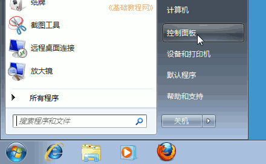
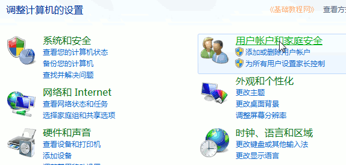
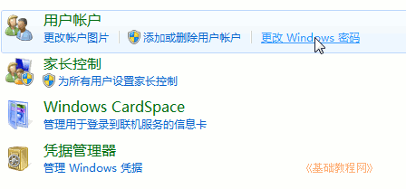
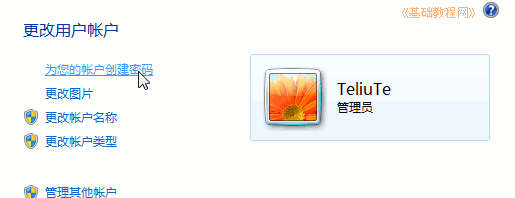
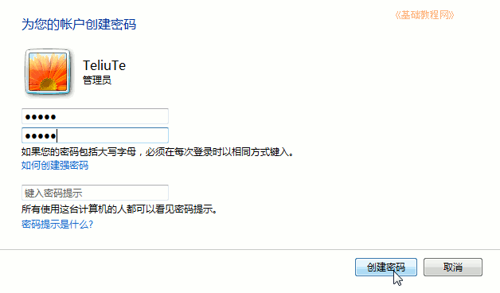
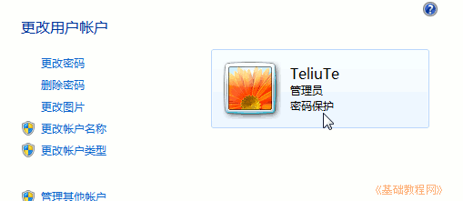
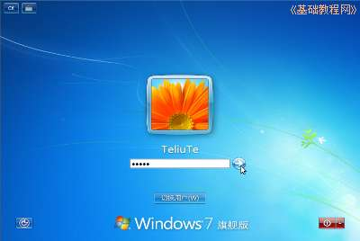

Windows7 基础入门教程
作者：TeliuTe 来源：基础教程网
十七、设置用户密码 返回目录 下一课给用户设置密码可以防止别人随意进入自己的账号；
1、设置密码
1）点“开始－控制面板”，进入系统管理窗口；

2）点击右上边的“用户账户和家庭安全”，进入用户管理；

3）在出来的面板中，点右上边的“更改 Windows 密码”；

4）在出来的面板左边，点第一个“为您的账户创建密码”；

5）在出来的面板中，点击密码文本框输入密码，输两遍一样的，再点右下角的“创建密码”按钮；

6）返回到用户面板，在用户图标那儿可以看到“密码保护”；

7）以后登录系统时，会提示输入密码，然后点右边的箭头进入；

本节学习了创建用户密码的基础知识，如果你成功地完成了练习，请继续学习下一课内容；
本教程由86团学校TeliuTe制作|著作权所有
基础教程网：>http://teliute.org/
美丽的校园……
转载和引用本站内容，请保留版权信息和本站链接。